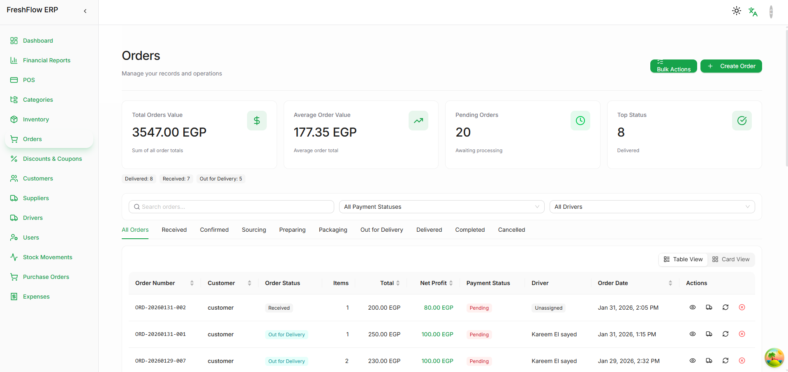
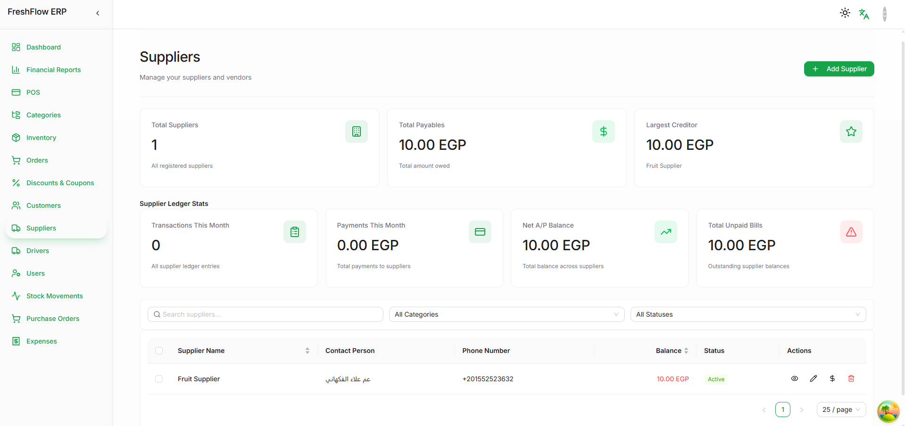
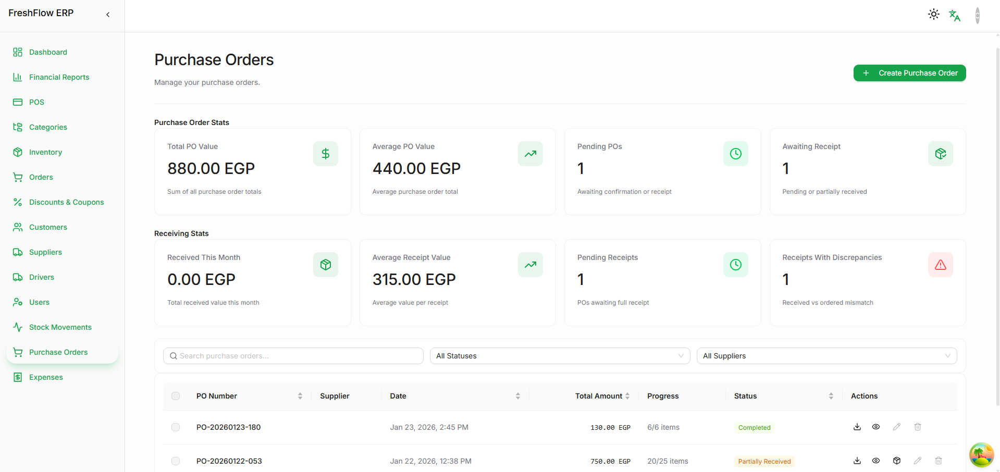

Orders
Orders operations
Operational order tracking, status segmentation, bulk actions, and table-driven workflow control.
ERP operations · collaboration showcase
This repo is the public case-study layer for FreshFlow ERP. It focuses on operational breadth and workflow clarity, while keeping the raw implementation and business-sensitive behavior private.

Operational surfaces
The images below come from existing frontend screenshot artifacts. They are paired with a public-safe narrative around the ERP modules and stabilization work behind the product direction.
Operational order tracking, status segmentation, bulk actions, and table-driven workflow control.
Vendor management surface with payable and balance visibility.

Purchase order metrics, receipt tracking, and discrepancy-aware operational framing.

Boundary